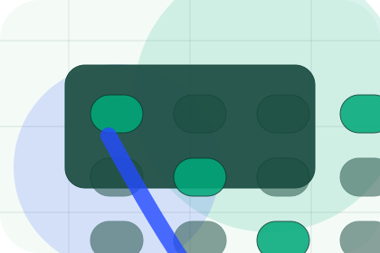
SpecTerra guides spec
A useful entry point for visitors who need more context before they book an audit.
Open resourceResources / 01
Resources opens as a clear environmental decision hub: what Terra offers, who it helps, why it matters, and which route to take first.
The first screen combines positioning, proof, primary action, and fast internal navigation, so people can act immediately or compare the rest of the resources route with context.
Emissions dashboard hero
Select the closest route and Terra keeps the next step, proof, and follow-up expectation aligned with accountability and measurable change.
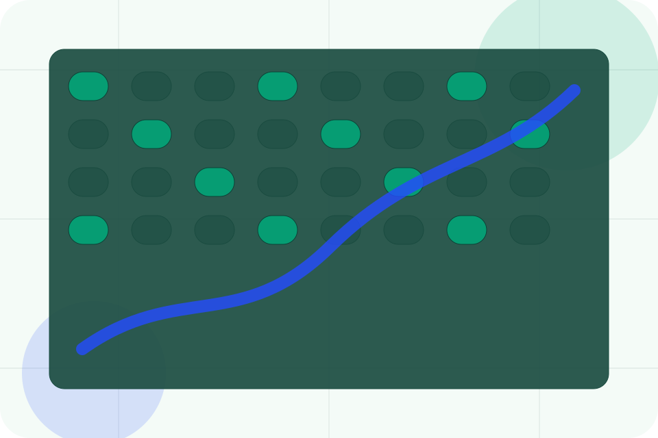
Resources / 02
Guides gives researching visitors a practical route into guides, checklists, and comparison material without leaving the site structure.
Each resource behaves like a useful internal link, giving cold and warm visitors a way to learn, compare, and return to the action path.
View ResourcesA useful entry point for visitors who need more context before they book an audit.
A scannable comparison aid that makes research usable before the next decision.
A route back to support, services, or contact when the visitor is ready to act.

SpecA useful entry point for visitors who need more context before they book an audit.
Open resource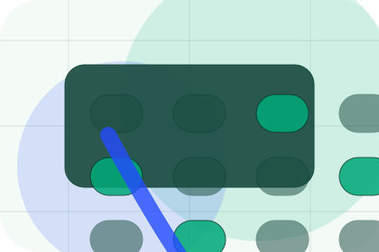
ReportA scannable comparison aid that makes research usable before the next decision.
Open resource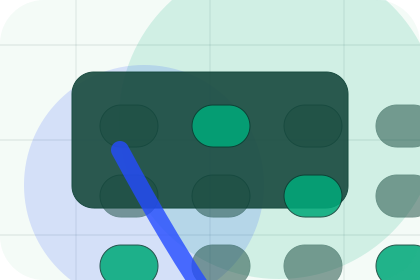
PlaybookA route back to support, services, or contact when the visitor is ready to act.
Open resourceResources / 03
Checklists gives researching visitors a practical route into guides, checklists, and comparison material without leaving the site structure.
Each resource behaves like a useful internal link, giving cold and warm visitors a way to learn, compare, and return to the action path.
Explore ResourcesA useful entry point for visitors who need more context before they book an audit.
A scannable comparison aid that makes research usable before the next decision.
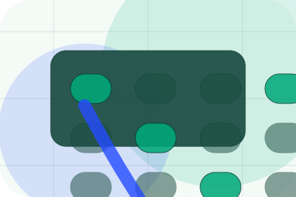
A route back to support, services, or contact when the visitor is ready to act.
Resources / 04
Toolkits gives researching visitors a practical route into guides, checklists, and comparison material without leaving the site structure.
Each resource behaves like a useful internal link, giving cold and warm visitors a way to learn, compare, and return to the action path.
Explore ResourcesA useful entry point for visitors who need more context before they book an audit.
A scannable comparison aid that makes research usable before the next decision.
A route back to support, services, or contact when the visitor is ready to act.
Resources / 05
Regulation gives researching visitors a practical route into guides, checklists, and comparison material without leaving the site structure.
Each resource behaves like a useful internal link, giving cold and warm visitors a way to learn, compare, and return to the action path.
Explore ResourcesA useful entry point for visitors who need more context before they book an audit.
A scannable comparison aid that makes research usable before the next decision.
A route back to support, services, or contact when the visitor is ready to act.
Resources / 06
Education gives researching visitors a practical route into guides, checklists, and comparison material without leaving the site structure.
Each resource behaves like a useful internal link, giving cold and warm visitors a way to learn, compare, and return to the action path.
Explore Resources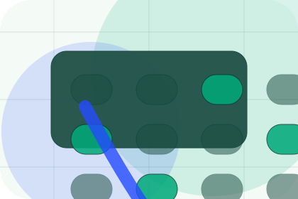
A useful entry point for visitors who need more context before they book an audit.
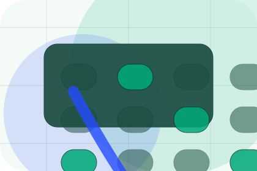
A scannable comparison aid that makes research usable before the next decision.
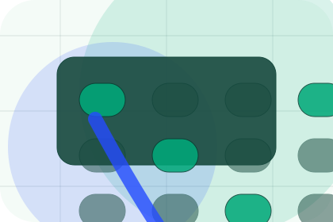
A route back to support, services, or contact when the visitor is ready to act.
Resources / 07
Downloads gives researching visitors a practical route into guides, checklists, and comparison material without leaving the site structure.
Each resource behaves like a useful internal link, giving cold and warm visitors a way to learn, compare, and return to the action path.
View ResourcesA useful entry point for visitors who need more context before they book an audit.
A scannable comparison aid that makes research usable before the next decision.
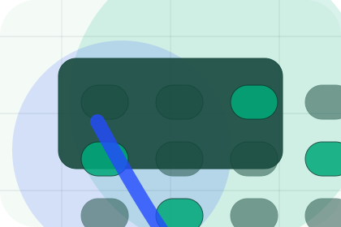
A route back to support, services, or contact when the visitor is ready to act.
A useful entry point for visitors who need more context before they book an audit.
Open resourceA scannable comparison aid that makes research usable before the next decision.
Open resourceA route back to support, services, or contact when the visitor is ready to act.
Open resourceResources / 08
Articles gives researching visitors a practical route into guides, checklists, and comparison material without leaving the site structure.
Each resource behaves like a useful internal link, giving cold and warm visitors a way to learn, compare, and return to the action path.
View ResourcesA useful entry point for visitors who need more context before they book an audit.
A scannable comparison aid that makes research usable before the next decision.
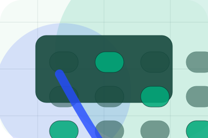
A route back to support, services, or contact when the visitor is ready to act.
A useful entry point for visitors who need more context before they book an audit.
Open resourceA scannable comparison aid that makes research usable before the next decision.
Open resourceA route back to support, services, or contact when the visitor is ready to act.
Open resourceResources / 09
Learn gives researching visitors a practical route into guides, checklists, and comparison material without leaving the site structure.
Each resource behaves like a useful internal link, giving cold and warm visitors a way to learn, compare, and return to the action path.
Explore ResourcesTerra structures learn around guide, checklist, and a clear next route so visitors can compare the block quickly before they book an audit.
Book AuditResources / 10
Terra closes the resources route with a clear action, a quick reminder of the value, and a low-friction way to book an audit.
Visitors who are ready can use the primary action. Visitors who are still comparing can scan the section links, proof, and support routes before they book an audit.
Book AuditThe final block keeps the choice simple: act now, compare one more proof route, or send enough detail for a focused response.
Book Auditaccountability and measurable change
A climate-accounting site with emissions dashboards, report proof, methodology panels, and audit CTAs. Resources ends with a direct path to book an audit, plus enough context for visitors who still need to compare.
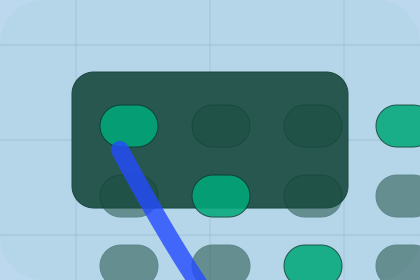
Book AuditInformation is provided for planning and should be reviewed for the final client, location, and operating rules.